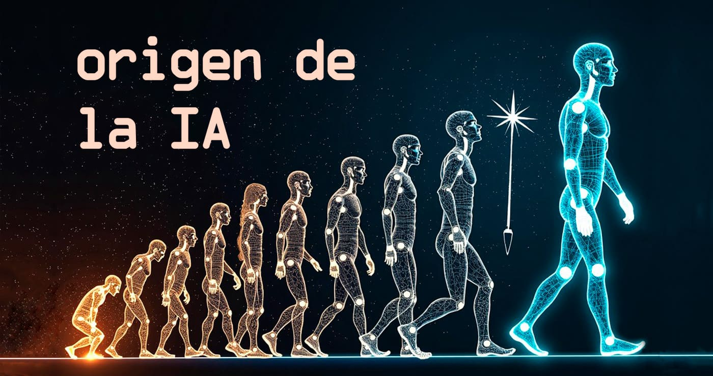
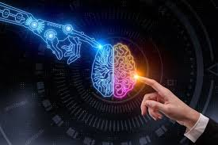

¿Qué es la Inteligencia Artificial?
La Inteligencia Artificial (IA) es la disciplina de la informática que desarrolla sistemas capaces de realizar tareas que requieren inteligencia humana: aprender, razonar, resolver problemas y tomar decisiones.
Los sistemas de IA utilizan algoritmos y modelos matemáticos para analizar grandes cantidades de datos, identificar patrones y realizar predicciones. Esto permite que máquinas y software “piensen” y tomen decisiones de manera autónoma.
Algunos ejemplos comunes de IA incluyen: asistentes virtuales como ChatGPT y Siri, motores de recomendación en Netflix o Spotify, sistemas de reconocimiento facial y herramientas de diagnóstico médico.

Línea histórica de la IA
La Inteligencia Artificial ha evolucionado rápidamente desde sus primeros conceptos en la década de 1950. Aquí se destacan algunos hitos importantes:
| Año | Acontecimiento |
|---|---|
| 1950 | Alan Turing propone el Test de Turing para medir la inteligencia de las máquinas. |
| 1956 | La IA nace oficialmente con la conferencia de Dartmouth, donde se acuña el término "Inteligencia Artificial". |
| 1997 | Deep Blue, de IBM, derrota al campeón mundial de ajedrez Garry Kasparov. |
| 2012 | AlexNet y el Deep Learning revolucionan la visión artificial y el reconocimiento de imágenes. |
| 2020-2024 | Surgimiento de la IA generativa: modelos como GPT, DALL·E, Midjourney y ChatGPT transforman la creación de texto e imágenes. |
Hoy en día, la IA se aplica en casi todos los campos de la vida diaria: desde la salud hasta la educación, la seguridad, el entretenimiento y la industria.
Leyes y regulaciones en Argentina
Aunque Argentina aún no tiene una ley específica sobre Inteligencia Artificial, la Ley de Protección de Datos Personales regula muchos aspectos del uso de datos por estos sistemas. Es fundamental garantizar que la IA se use de manera ética y segura.
- Transparencia algorítmica: los ciudadanos deben poder entender cómo se toman decisiones automatizadas.
- Reconocimiento facial: regulaciones para proteger la privacidad de las personas.
- Protección de menores: restringir el uso de datos sensibles de niños y adolescentes.
- Ética en automatización: garantizar que los sistemas automatizados no discriminen ni dañen a la sociedad.
Otros países también están creando marcos legales para IA, como la Unión Europea con su propuesta de "Reglamento de IA", que busca establecer reglas estrictas para IA de alto riesgo.
Categorías de IA
La Inteligencia Artificial se puede clasificar según sus funciones y aplicaciones. Las más destacadas incluyen:
1. Asistentes Inteligentes
Ejemplos: ChatGPT, Siri. Estos sistemas ayudan a responder preguntas, escribir textos, programar tareas y organizar la información de manera inteligente.
2. Generación de Contenido e Imágenes
Ejemplos: DALL·E, Midjourney. Crean ilustraciones, diseños y contenido multimedia a partir de descripciones textuales, facilitando la creatividad y el marketing.
3. Automatización Inteligente
Ejemplos: UiPath, Blue Prism. Automatizan tareas repetitivas y administrativas, aumentando la productividad en empresas y organizaciones.
4. IA en Medicina
Ejemplos: Watson Health de IBM, algoritmos de diagnóstico de imágenes médicas. Permiten detectar enfermedades de manera temprana y personalizar tratamientos.
5. IA en Finanzas
Ejemplos: sistemas de trading automatizado, detección de fraudes. Analizan grandes cantidades de datos financieros para tomar decisiones rápidas y precisas.
El futuro de la Inteligencia Artificial
La Inteligencia Artificial seguirá transformando todos los aspectos de nuestra vida. Algunas tendencias futuras incluyen:
- IA explicable: sistemas capaces de justificar sus decisiones.
- IA ética y responsable: desarrollo de algoritmos que respeten la privacidad y los derechos humanos.
- IA multimodal: integración de texto, imagen, voz y video para generar contenidos más complejos.
- Automatización avanzada: robots y sistemas inteligentes capaces de realizar tareas físicas y cognitivas de manera autónoma.
- IA en educación: personalización de la enseñanza y tutorías inteligentes para cada estudiante.
En resumen, la IA tiene un enorme potencial, pero su desarrollo debe ser acompañado de ética, regulación y supervisión para evitar riesgos.